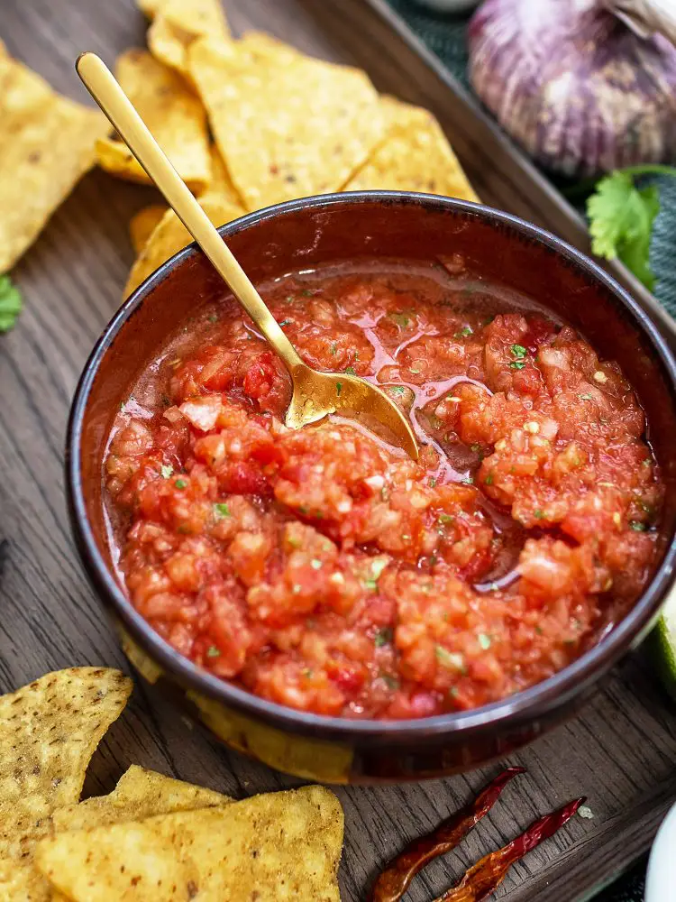

Salsa Recipe

Salsa is a perfect dish for anyone that loves a long movie night. My spouse and I love making it as a lazy snack.
Surprisingly, salsa does not take a long time to prepare!
What do I need to make salsa!?
The ingredient list is quite simple:
- 1 full tomato
- 2 cans of tomato paste
- 2 cloves of garlic
- Lemon or lime (half)
- 1 full purple onion
- A good spotify playlist
- Chilli, or chilli sauce
Steps
- Finely chop the tomatoes, garlic, onion, and chilli.
- Add them all to a big bowl
- Squeeze some lemon or lime (per preference)
- Pour the 2 cans of tomato paste (preferably 270 mg in total)
- Mix well
- Add salt, and black pepper on preference
- Adjust the chilli on your spiciness tolarence
As promised, it is a very straightforward and simple recipe that is not only easy to follow - but also ingredibly delicious
Home Page